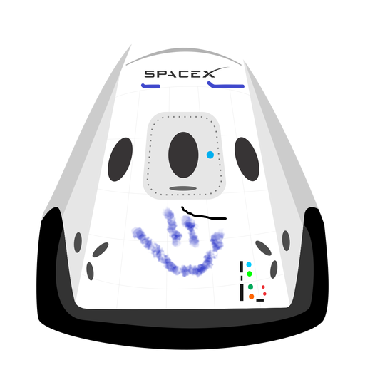

Hyperblog
Tu blog de cabecera
Este es el título atractivo e interesante del post
Y este es el párrafo de inicio donde vamos a explicar las cosas increéibles que se pueden hacer con ramas
Los blogs son la mejor forma de compartir información asdfasfa dfa sefa sdf.s.s.....
suscribete y dale like